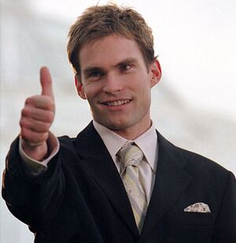

Jim Levenstein, Kevin Myers, Oz Ostreicher e Paul Finch são quatro amigos virgens às vésperas do baile de formatura. Em meio a suas tentativas frustradas de fazer sexo com as namoradas, olhar mulheres nuas na internet e até mesmo atacar uma torta recém-saída do forno, os rapazes fazem um pacto e prometem deixar a virgindade para trás antes do baile de formatura. Agora eles têm 24 horas para cumprir esse acordo.
| Personagem | Ator(a) | Descrição | imagem |
| Levenstein | Jason Biggs | Jim Levenstein, um nerd desajeitado e sexualmente ingênuo cujo pai lhe oferece pornografia e conselhos sexuais desajeitados | |
| Kevin Myers | Thomas Ian | O calmo líder do grupo que busca perder a virgindade com sua namorada Vicky | |
| Oz Ostreicher | Chris Klein | Uma estrela superconfiante do time de lacrosse do colégio | |
| Paul Finch | Eddie Kaye | Paul Finch, aquele que aprecia mochaccinos | |
| Steve Stifler | Seann William | Um garoto popular, barulhento, apaixonado por esportes, que costuma dar festas descontroladas e é o único dos cinco amigos que não é virgem |  |